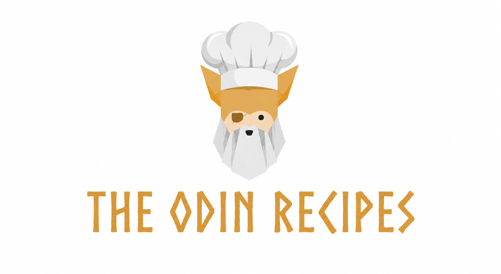

"HEALTHY food creates HEALTHY mindset."
Healthy food is the foundation of a healthy and active life. A balanced diet provides our body with the nutrients, vitamins, minerals, and energy needed for proper growth and development. Fresh fruits, vegetables, whole grains, pulses, milk, nuts, and other nutritious foods should be included in our daily meals. We should avoid eating too much junk food, sugary drinks, and oily or highly processed foods because they can negatively affect our health. Healthy food also helps improve our immunity, concentration, and overall well-being. As the famous Greek physician Hippocrates is often credited with saying,“Let food be thy medicine and medicine be thy food.” This reminds us that the food we eat has an important role in maintaining good health. Therefore, we should develop healthy eating habits from an early age and choose nutritious food to lead a happy, energetic, and disease-free life.